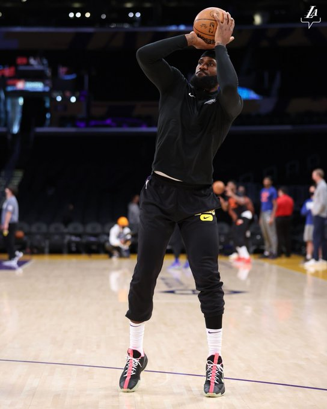

NBA ARTICLES
Top Stories
Lakers' LeBron James (knee) drops triple-double in victorious return vs. Knicks
After missing 5 straight games, LeBron James returned to the lineup for L.A., which went 1-4 in his absence.
From NBA.com News Services

The Lakers rally to win in OT as LeBron tallies a triple-double in his return.
The Lakers, limited most of the season due to injuries suffered by either Anthony Davis or LeBron James, once again reunited the pair on court Saturday, as James was cleared to play in a nationally televised overtime victory vs. the Knicks.
The 37-year-old star definitely didn’t miss a beat. He finished with 29 points, 13 rebounds and 10 assists in 40 minutes while shooting 13-of-24 overall with a 2-of-7 clip from deep.
James played a vital role in the 21-point comeback in the second half, along with Malik Monk’s scoring and Anthony Davis’ prowess at both ends.
James finished the game with his 103rd career triple-double, racking up 29 points, 10 assists & 13 rebounds in 40 minutes, shooting 13-for-24 from the field.
The Lakers were 1-4 in their last five matchups, without LeBron on the floor. The superstar forward departed early from the Lakers’ recent six-game road trip and traveled back to L.A. for treatment on his injured left knee. He had most recently played in a game for the Lakers on Jan. 25, logging 33 points, seven rebounds, six assists, three steals and two blocks in a 106-96 win in Brooklyn.
LeBron James returned to the lineup after missing the last five games due to left knee soreness. James warmed up before the game and was able to play.
The Los Angeles Lakers received welcome news prior to Saturday’s game against the New York Knicks.

Power Rankings: Suns hold No. 1 spot
See where all 30 teams rank after the first 16 weeks of the 2021-22 season.
24 hours ago

Siakam, Ingram named Players of the Week
The former All-Star forwards claim the honors for Week 16.
4 hours ago

10 things to know from the past 7 days in NBA
All-Star reserves announced, trade season gets underway, Embiid's streak continues and more from Week 16 in the NBA.
4 hours ago

Nash says Nets won't trade Harden
Brooklyn's coach shot down trade rumors involving the former MVP before the Nets...
24 hours ago

Cavs acquire swingman LeVert in deal with Pacers
Cleveland has traded Ricky Rubio to Indiana in the deal to acquire a talented...